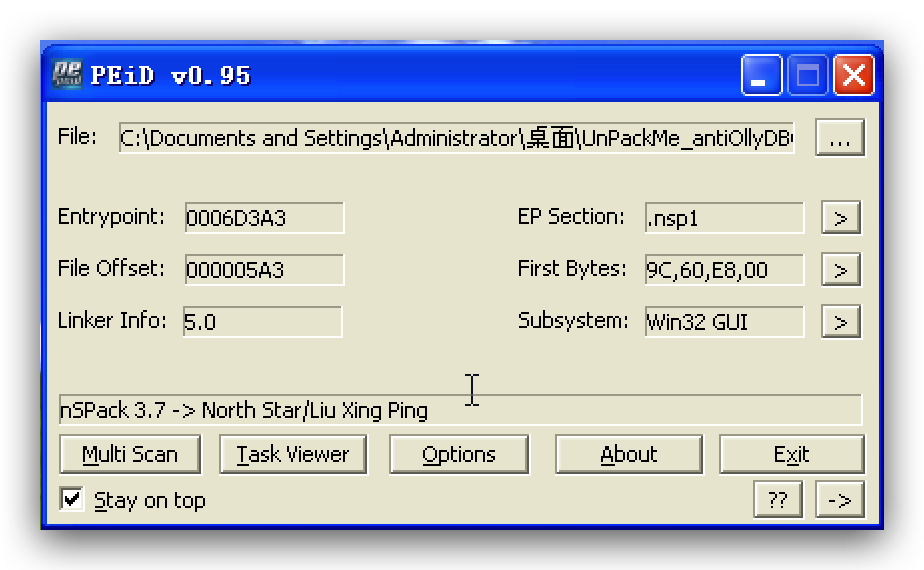
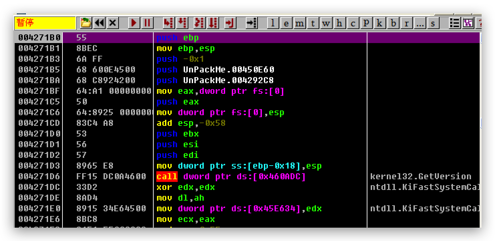

基础知识：ESP定律法
使用PEiD查壳看到是yC壳：
在执行过pushad后再ESP指向内存处设下硬件访问断点：
由于程序中调用了IsDebuggerPresent，通过Ctrl+g定位到函数地址，并在ret处设下断点，并执行：
然后单步ret到用户代码段，看到一段异常处理的代码：
在执行完int 3后触发异常：
接下来查看SEH Chain，并找到地址0046590B：
然后在这里设下断点，并单步执行：
执行retn后跳到dll中，Alt+F9返回到用户代码段：
到用户代码处就能看到OEP：
基础知识：单步调试法
查壳：
单步走到retn：
再单步一次走到OEP：
基础知识：单步调试法
用PEiD查壳查不到，但可以看出数据段是有点问题的：
还是单步走，走到retn：
然后再走一次到OEP：
基础知识：无
查壳：
可以看到有很多inc eax和dec eax：
执行完jmp eax后可以判断是OEP，但样子不太像。根据前面的观察，inc eax和dec eax两条指令互相抵消，其实是做了无用功，中间夹杂着push ebp、mov ebp, esp、push -0x1等语句：
通过修改jmp后的语句来进行脱壳：
基础知识：ESP定律法
查壳：
执行完第一条call后，在ESP指向内存处设下硬件访问断点：
F9运行8次后定位到OEP：
基础知识：BP VirtualProtect法
查壳：
在VirtualProtect上设下断点，并运行：
在retn处设下断点并运行：
单步运行走到OEP：
基础知识：ESP定律法
查壳：
单步走过pushfd后，在ESP指向内存处设下硬件访问断点：
F9运行走到OEP：
基础知识：ESP定律法
查壳：
执行完pushad后设置硬件访问断点：
单步两次执行两个跳转语句后走到OEP：
基础知识：ESP定律法
查壳：

执行pushfd后在ESP指向内存处设置硬件访问断点：
F9运行走到OEP：

基础知识：ESP定律法
查壳：
在执行完第一个call后设置硬件访问断点：
F9运行走到OEP：
在计算机病毒防治的上课过程中，主要是深入地接触了加壳与脱壳，以及对上一学期逆向基础的复习。如果是自己学习，网上的一些教程没有很详细地叙述各种壳的原理，但在计算机病毒防治课上，通过一些练习增加了对不同壳实现的理解。同时，对PE文件结构也有了进一步的认识。在平时的练习中对一些常用Windows API加深了认识。
现在，解决Windows逆向的问题，是非常非常重要的。所以，Windows逆向，到底应该如何实现。一般来说，了解清楚Windows逆向到底是一种怎么样的存在，是解决一切问题的关键。总结的来说，Windows逆向，发生了会如何，不发生又会如何。Windows逆向，到底应该如何实现。本人也是经过了深思熟虑，在每个日日夜夜思考这个问题。斯宾诺莎说过一句富有哲理的话，最大的骄傲于最大的自卑都表示心灵的最软弱无力。这似乎解答了我的疑惑。富兰克林说过一句富有哲理的话，你热爱生命吗？那么别浪费时间，因为时间是组成生命的材料。这启发了我，我认为，对我个人而言，Windows逆向不仅仅是一个重大的事件，还可能会改变我的人生在这种困难的抉择下，本人思来想去，寝食难安。塞涅卡曾经说过，真正的人生，只有在经过艰难卓绝的斗争之后才能实现。这似乎解答了我的疑惑。所谓Windows逆向，关键是Windows逆向需要如何写。
不过在后期，感觉经过很长时间的练习之后，一部分的题目就有点过于简单和繁琐，有些浪费时间。个人感觉这门课可以和之前的软件安全合并成一门大课来上，这样学的更系统。